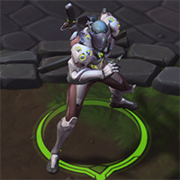
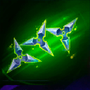
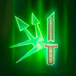
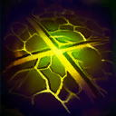
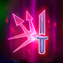
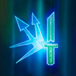
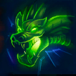
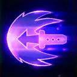

Genji
Welcome to our Genji guide for Heroes of the Storm. Here you will learn everything you need to know in order to play Genji in a competitive environment, whether you play on your own or with a team.
Shuriken Build
| Level 1 | Level 4 | Level 7 | Level 10 | Level 13 | Level 16 | Level 20 |
|---|---|---|---|---|---|---|
|  |  |  |  |  |
The Shuriken Build is a very safe Build that combines strong poke granted thanks to Shuriken Mastery Icon Shuriken Mastery at Level 4, while X-Strike Icon X-Strike also allows Genji to close the gap and strike enemies from melee range. Several Deflect Icon Deflect-related talents like Perfect Defense Icon Perfect Defense and, more importantly, Zanshin Icon Zanshin, allow for aggressive gameplay to finish off targets in close combat.
Swift Strike Build
| Level 1 | Level 4 | Level 7 | Level 10 | Level 13 | Level 16 | Level 20 |
|---|---|---|---|---|---|---|
|  |  |
The Swift Strike Build is a high skill-cap Build that focuses on Genji slicing and dicing his way through the enemy team, aiming to get as many cooldown resets and Mana cost refunds on Swift Strike Icon Swift Strike as possible. Timing is crucial when playing this Build, as Genji needs to make sure to quickly execute an individual target in order to get his combo rolling. Activating Dragonblade Icon Dragonblade shortly after using Swift Strike Icon Swift Strike usually allows Genji to deal a heavy amount of burst damage. However, remember that he is still very susceptible to enemy Stuns and Roots, as they can completely shut down his momentum. Consequently, wait until some of those crowd control abilities have been used before recklessly diving deep into the enemy lines.
Go Back